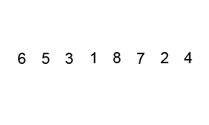

In the previous sorting algorithms , the algorithms that we implemented had average time complexity of O(N^2). These algorithms become inefficient when the task is to sort sequences with large no. of elements.
The generally used sorting algorithms with better time complexities are as follows:
1. Quick Sort
2. Merge Sort
3. Bucket Sort
While implementing Quick sort, we will be using Divide and conquer approach where we sort the sequence by dividing it in small sub-sequences, thus decreasing no. of iterations.
Short Explanation
In quick sort initially we will select an element as pivot and place it at its correct position and by swapping, we bring all elements smaller than pivot on one side of pivot and all greater elements on other side of pivot.
Now, as the sequence is divided in two sections, we will treat each section as separate sequence and select pivot for each section. We will again place pivot at correct position for each section but this time we will have to do less no. of comparisons. This process of division in two parts and placing pivot at correct position will be repeated unless each element is placed at correct position.
Detailed explanation
We will initially consider one element(pivot element) and place it at its correct position by comparing it with all other elements. Generally we select first, middle or last element of the sequence as pivot element.
For now, we will consider first element of the sequence as pivot element.
By swapping we make sure that all elements less than pivot are placed at indices less than that of pivot element and the elements greater than pivot are placed at indices greater than that of pivot element.
Now, the sequence is divided in two sections, one with elements less than the pivot element and other with elements greater than pivot element.
Now, we will do the above operations on both sections separately by considering them separate sequences i.e. we will select separate pivot elements for both sub-sequences and place them at their correct position and each of these two sequences will be further divided in two parts w.r.t their pivot element.
Each time, a sub-sequence is divided in two parts, we are placing 1 element at its correct place i.e. the pivot element.
The sorting algorithms working on O(N^2) usually traverse the whole loop to compare each element with every other element. The similar logic is applied in quick sort but here, for each element we keep on decreasing our range of elements for comparison by dividing sequence in two parts. This process is repeated until all elements are placed at their correct position.
Let’s understand above explanation by following example:
Consider a sequence with 16 elements:
Case 1: Comparing each element with every other element which means it will approximately require n*n comparisons i.e. 256 comparisons.
Case 2: Dividing sequence in small parts and placing 1 element at its correct place each time.
Below is a representation of division of sequence in smaller sections.
Here 1 denotes an element at correct position 1* denotes current pivot element. The numbers denote the no. of elements in which sub-sequence is divided e.g. 7 means that sub-sequence has 7 elements
16 (unsorted array)
7 1* 8 (15 comparisons)
[3 1* 3] 1 [4 1* 3] (6 comparisons+7 comparisons)
[1 1* 1] 1 [1 1* 1] 1 [2 1* 1] 1 [1 1* 1] (2 + 2 + 3 + 2 comparisons)
1 1 1 1 1 1 1 1 [1* 1] 1 1 1 1 1 1 (2 comparisons)
Total no. of comparisons: 15+6+7+2+2+3+2+2 = 35 comparisons
Here, on the basis of dividing sequence in two parts we did the job of 256 comparisons in 35 comparisons. This difference becomes huge for large sequences.
Visualisation of quick sort is as follows:

Implementation of quick sort is as follows:
Time Complexity : O( n2 )
So that’s it for this article we will be coming up with our next article on further topics very soon till then keep learning, keep coding, keep reading and keep improving !!
Happy Coding 😊
By Programmers Army